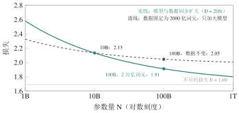
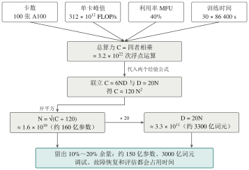
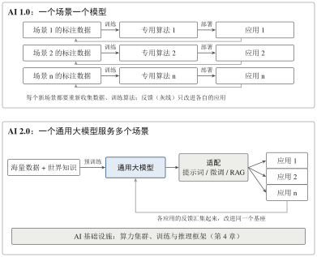

2.4 规模、能力与局限
知道了模型怎样计算，接下来的问题是：模型要多大、数据要多少、算力要多少才合适？变大以后能得到什么，又仍然缺什么？本节先说明算法、算力、数据三要素怎样被缩放定律联系起来——损失随参数量、数据量和计算量呈幂律下降，并可用 \(C\approx6ND\) 与 Chinchilla 配比做资源规划；再从“预测即压缩”解释规模为什么带来能力，讨论涌现能力的争议；然后转向局限：幻觉的表现、成因与对策，以及大模型的长处与短板；最后说明大模型怎样改变了人工智能应用的开发方式。
2.4.1 三要素与四个规划问题
算法、算力、数据是人工智能的三要素。大模型时代，三者都在快速增长。
算法（模型规模） 2018 年的 BERT-Large 约有 3.4 亿参数，2019 年的 GPT-2 有 15 亿，2020 年的 GPT-3 有 1750 亿。截至 2026 年 11 月，公开技术报告的模型中已有总参数达到万亿级的混合专家模型，例如 2025 年开源的 Kimi K2（总参数约 1 万亿，每个词元激活约 320 亿；这类模型由许多“专家”子网络组成，每个词元只经过其中少数几个，见第 2.5.1 小节）[27]。
算力 GPU 是深度学习最常用的算力资源。从 2012 年的 NVIDIA K10（单精度峰值约 4.6 TFLOP/s，即每秒 \(4.6\times10^{12}\) 次浮点运算）到 2020 年的 A100（SXM 版 BF16 稠密张量算力约 312 TFLOP/s），单卡峰值算力提高了约 70 倍；若按 A100 的 INT8 稀疏运算峰值（约 1248 万亿次/秒）计算，则约为 270 倍，常见的“提升了数百倍”说的是这种口径。比较算力时必须说明精度和是否稀疏。其后的 H100、B200 又成倍提升，但单卡仍远不能满足大模型训练的需要（第 4.1.2 小节）。
数据 GPT-1、GPT-2、GPT-3 的训练数据分别约为 5 GB、40 GB 和 45 TB（原始文本，清洗后约 570 GB）。表 2-4 列出了若干代表模型的参数量和训练数据量。
表 2-4 代表模型的参数量与训练数据量（按发布时间排列）
| 模型 | 年份 | 参数量 | 训练数据 |
|---|---|---|---|
| GPT-1 | 2018 | 1.17 亿 | BooksCorpus，约 5 GB |
| BERT-Large | 2018 | 3.4 亿 | BooksCorpus + 英文维基百科，约 33 亿词 |
| GPT-2 | 2019 | 15 亿 | WebText，约 40 GB |
| GPT-3 | 2020 | 1750 亿 | 清洗后约 570 GB，训练用约 3000 亿词元 |
| PaLM | 2022 | 5400 亿 | 约 7800 亿词元 |
| LLaMA | 2023 | 70 亿～650 亿 | 1 万亿～1.4 万亿词元 |
| Llama 3.1 | 2024 | 4050 亿 | 约 15 万亿词元 |
| DeepSeek-V3 | 2024 | 6710 亿（MoE，每词元激活 370 亿） | 约 14.8 万亿词元 |
| Kimi K2 | 2025 | 约 1 万亿（MoE，每词元激活约 320 亿） | 约 15.5 万亿词元 |
三者并不是各自独立地变大。实际工作中常会遇到这样四个问题：
计划训练一个 10B（100 亿参数；B 即 billion，十亿）的模型，至少需要多少数据？
收集到了 1T 的数据，能训练多大的模型？
有 100 张 A100、一个月时间，应该用多少数据训练多大的模型，效果最好？
把现有的 10B 模型扩大到 100B，效果能提升多少？
回答这些问题需要一个定量工具，这就是缩放定律。
2.4.2 缩放定律
2020 年，OpenAI 的卡普兰（Jared Kaplan）等人在大量实验中发现[28]：模型在测试集上的损失 \(\mathcal{L}\)，与参数量 \(N\)（不含嵌入参数）、训练数据量 \(D\)（词元数）和训练计算量 \(C\) 各自呈幂律关系。只要另外两个因素不成为瓶颈，这一趋势跨越了 6 个数量级： \[\mathcal{L}(N)=\Bigl(\frac{N_c}{N}\Bigr)^{\alpha_N},\qquad \mathcal{L}(D)=\Bigl(\frac{D_c}{D}\Bigr)^{\alpha_D},\qquad \mathcal{L}(C)=\Bigl(\frac{C_c}{C}\Bigr)^{\alpha_C}, \tag{2-18}\] 其中 \(N_c\)、\(D_c\)、\(C_c\) 是拟合常数，\(\alpha_N\approx0.076\)，\(\alpha_D\approx0.095\)，\(\alpha_C\approx0.050\)。幂律在双对数坐标下是一条直线：规模每增大一个数量级，损失按一个固定的比例下降。通俗的说法“规模指数增加，效果线性提高”指的就是这一点：横轴取对数后，损失（的对数）随之线性下降。这项研究还有三个观察：
规模比形状重要：总参数量固定时，层数、宽度、头数的不同组合对性能影响很小。
边际递减：幂律意味着每一点提升都要付出成倍的代价，性能逐渐逼近一个下限。
模型与数据要同步增长：只加大模型、不增加数据，数据很快成为瓶颈，测试损失不再下降（极端情况下出现过拟合）；只增加数据、不加大模型，同样会遇到边际递减。
计算量公式 三个量之间有一个很有用的近似关系： \[C \approx 6\,N\,D . \tag{2-19}\] 其中的 6 来自第 2.1.4 小节：前向传播时，每个参数对每个词元做一次乘法和一次加法，共 2 次浮点运算；反向传播既要对激活求梯度、又要对权重求梯度，约为前向的 2 倍，即 4 次。推理只有前向，生成一个词元约需 \(2N\) 次运算。第 4 章用同一公式估算训练时间（式 （4-2））。
卡普兰等人还给出了算力增长时的最优分配：最优参数量 \(N\propto C^{0.73}\)，最优批大小 \(B\propto C^{0.24}\)，最优训练步数 \(S\propto C^{0.03}\)。也就是说，算力增加时，大部分应花在加大模型上，训练步数几乎不变。GPT-3 用 1750 亿参数只训练了约 3000 亿词元，正是这一结论的产物。
2.4.3 Chinchilla 的修正与资源规划
2022 年，DeepMind 的霍夫曼（Jordan Hoffmann）等人训练了 400 多个模型，发现卡普兰的分配方案低估了数据的作用[29]。他们的结论是：模型和数据应当等比例扩大，即 \(N\propto C^{0.5}\)、\(D\propto C^{0.5}\)，最优配比约为每个参数 20 个词元： \[D \approx 20\,N . \tag{2-20}\] 为了验证，他们用与 2800 亿参数的 Gopher 相同的算力，训练了只有 700 亿参数、但用了 1.4 万亿词元的 Chinchilla，结果 Chinchilla 在几乎所有评测任务上都超过了 Gopher。论文还拟合了一个同时含 \(N\) 和 \(D\) 的损失公式： \[\mathcal{L}(N,D) = E + \frac{A}{N^{\alpha}} + \frac{B}{D^{\beta}},\qquad E=1.69,\ A=406.4,\ B=410.7,\ \alpha=0.34,\ \beta=0.28 . \tag{2-21}\] 式中的 \(A\)、\(B\) 是拟合常数（这里的 \(B\) 与批大小无关）。三项各有含义：\(E\) 是不可约损失，代表自然语言本身的不确定性，再大的模型也消除不了；第二项是模型容量不足带来的损失；第三项是数据不足带来的损失。图 2-7 画出了两种扩大方式下损失的变化。

图 2-7 由 Chinchilla 拟合公式（式 2-21）计算的损失随参数量的变化。数据固定时曲线很快趋平，即“数据成为瓶颈”；两条曲线在 10B 处重合，因为此时 20N 恰为 2000 亿词元
辨析
卡普兰（2020）与 Chinchilla（2022）给出的最优分配不同，并非谁算错了，而是实验设置不同。Chinchilla 论文认为，卡普兰的实验对不同训练长度沿用同一套学习率衰减计划，没有为每个算力预算重新调整，使较小模型的潜力被低估，因而高估了加大模型的收益。后续分析还指出[30]，卡普兰的 \(N\) 不含嵌入参数、实验规模也较小，而 Chinchilla 的 \(N\) 含嵌入参数，这一口径差异本身就能解释两者结论的大部分差距；哪个因素是主因，目前仍有争论。今天做训练规划，一般以 Chinchilla 的 \(D\approx20N\) 为“训练最优”的基准，代入公式时要注意 \(N\) 的口径。
用式 （2-19）、（2-20） 和 （2-21），就可以回答第 2.4.1 小节的四个问题。其中第三问最常用，也最容易算错，图 2-8 给出了它的计算流程。
例 2-7 用缩放定律回答四个规划问题
A100（SXM 版）的 BF16 稠密算力取 312 TFLOP/s；实际训练能达到的模型算力利用率（MFU，实际有效算力占峰值的比例）取 40%；一个月按 30 天计；英文文本平均约 4 字节一个词元。以下均为数量级估算。
| 步骤 | 算什么 | 算式 | 结果 | 这个数从哪来 |
|---|---|---|---|---|
| 1 | 问 1：数据量 | \(D=20\times10^{10}\) | \(2\times10^{11}\) 词元 | 式 （2-20），\(N=10^{10}\) |
| 2 | 问 1：计算量 | \(C=6\times10^{10}\times(2\times10^{11})\) | \(1.2\times10^{22}\) | 式 （2-19） |
| 3 | 问 2：1 万亿词元 | \(N=10^{12}\div20\) | \(5\times10^{10}\) | “1T”指词元数 |
| 4 | 问 2：1 TB 文本 | \(D=10^{12}\div4=2.5\times10^{11}\)；\(N=D\div20\) | \(1.25\times10^{10}\) | “1T”指字节，每词元约 4 字节 |
| 5 | 问 3：总算力 | \(100\times(312\times10^{12})\times0.4\) \(\times\,(30\times86\,400)\) | \(3.2\times10^{22}\) | 卡数、峰值、MFU、秒数 |
| 6 | 问 3：联立 | \(C=6N\times20N=120N^{2}\)；\(N=\sqrt{(3.2\times10^{22})\div120}\) | \(1.63\times10^{10}\) | 式 （2-19） 代入式 （2-20） |
| 7 | 问 3：数据量 | \(D=20\times(1.63\times10^{10})\) | \(3.3\times10^{11}\) | 第 6 步 |
| 8 | 问 4：10B | \(1.69+406.4\div(10^{10})^{0.34}\) \(+\,410.7\div(2\times10^{11})^{0.28}\) \(=1.69+0.162+0.281\) | \(2.13\) | 式 （2-21），\(D=20N\) |
| 9 | 问 4：100B | \(1.69+406.4\div(10^{11})^{0.34}\) \(+\,410.7\div(2\times10^{12})^{0.28}\) \(=1.69+0.074+0.148\) | \(1.91\) | 同上 |
| 10 | 问 4：只加模型 | \(N=10^{11}\)，\(D\) 仍为 \(2\times10^{11}\)：\(1.69+0.074+0.281\) | \(2.05\) | 数据不变 |
结论：问 1 约需 2000 亿词元；问 2 若指 1 万亿词元可训约 500 亿参数，若指 1 TB 英文文本约 125 亿参数（中文的字节与词元换算取决于分词器，需要实测）；问 3 最合理的方案是约 160 亿参数、3300 亿词元，考虑调试和故障恢复，实际再留 10%～20% 的余量，即训练约 150 亿参数的模型、喂入约 3000 亿词元；问 4 总损失从 2.13 降到 1.91，只下降约 10%，但扣除不可约的 \(E=1.69\) 后，可约损失从 0.44 降到 0.22，正好减半，代价是计算量增加 100 倍。若只加大模型而数据不变，损失只能降到 2.05，大部分收益被浪费。

图 2-8 例 2-7 第三问的计算流程：先由硬件和时间算出总算力，再用 \(C\approx6ND\) 与 Chinchilla 配比 \(D\approx20N\) 联立求出参数量和数据量
2.4.4 训练最优不等于部署最优
Chinchilla 配比回答的是“给定训练算力，怎样训出损失最低的模型”。但模型训练一次，要被调用亿万次，而每生成一个词元约需 \(2N\) 次运算，推理成本与参数量成正比。因此业界普遍对小模型“超量训练”：LLaMA-7B 用了 1 万亿词元[19]，Llama 3 8B 用了约 15 万亿词元[24]，每个参数上千个词元，远超 20 的配比。用更多的训练算力换一个更小、部署更便宜的模型，在调用量大时是划算的。
此外，2024 年以来的推理模型（如 OpenAI o1、DeepSeek-R1）表明，让模型在回答前生成更长的思考过程，也能稳定地提升数学、代码等任务的表现。这被称为测试时计算的缩放：除了训练时的 \(N\) 和 \(D\)，推理时花多少计算也成了一个可以调节的维度。
2.4.5 语言模型即压缩
为什么“预测下一个词”这么简单的目标，能训练出看起来会思考的模型？一个有力的解释来自信息论。香农证明：如果模型给某个词元的概率是 \(p\)，那么配合算术编码，这个词元可以用约 \(-\log_2 p\) 比特存储。于是整段文本的压缩长度（单位为比特）约为 \[\ell \approx -\sum_{t=1}^{T}\log_2 P_\theta(x_t\mid x_{<t}), \tag{2-22}\] 这恰好是式 （2-5） 的训练损失乘以 \(T\)，再除以 \(\ln2\)（把自然对数换成以 2 为底）。所以，降低损失与提高压缩率是同一件事。而要把一份内容压缩得足够好，就必须发现其中的规律——压缩物理教科书的最好办法，是掌握牛顿定律。德莱唐（Grégoire Delétang）等人（2023）用实验支持了这一观点[31]：只在文本上训练的 Chinchilla 70B，能把 ImageNet 图像块压缩到原始大小的 43.4%、把 LibriSpeech 语音压缩到 16.4%，优于专用的 PNG（58.5%）和 FLAC（30.3%）。
2.4.6 涌现能力
魏（Jason Wei）等人（2022）把涌现能力定义为：在小模型中不存在、在大模型中出现的能力[32]。典型例子有：
上下文学习（In-Context Learning，ICL，也译作情景学习）：只在提示中看几个示例就能完成新任务，不更新参数，GPT-3 使其广为人知；
思维链（Chain-of-Thought，CoT）推理：提示模型“一步一步地思考”，大模型的数学应用题准确率大幅提升，小模型却没有改善甚至变差；
指令遵循：经过指令微调后，大模型能完成训练中从未见过的指令。
涌现是否真实存在仍有争议。谢弗（Rylan Schaeffer）等人（2023）指出[33]，许多“突然出现”的能力来自评测指标的选择：若用“完全匹配”这种非对即错的指标，一道五位数加法题要每一位都对才算对，逐位准确率的平滑提升就会被放大成陡峭的跳变；换成连续指标后，曲线往往变得平滑。这提醒我们：缩放定律描述的损失是平滑可预测的，而某项具体任务能力何时变得可用则较难预测。
2.4.7 幻觉及其对策
幻觉（hallucination）指模型生成的内容看起来流畅可信，却与事实、上下文或用户要求不符。它是大模型进入医疗、法律、金融等严肃场景的最大障碍。表 2-5 列出了它的四种表现。
表 2-5 幻觉的四种表现
| 类型 | 表现 | 例子 |
|---|---|---|
| 上下文矛盾 | 前后说法不一致 | 前文说“张三是独生子”，后文又写“张三和他的哥哥” |
| 与提示词要求不一致 | 没有按用户的指令执行 | 要求“用英文、不超过 50 字”，却用中文写了 300 字 |
| 与事实矛盾 | 编造不存在的事实、数据或文献 | 给出一篇根本不存在的论文的标题和作者 |
| 荒谬的回复 | 内容与问题无关或不合逻辑 | 问天气，却回答了一段无关的菜谱 |
成因 把第 2.3 节的机制和训练过程对照起来，幻觉的来源可以归为六类：
基本原理是“文字接龙”：模型优化的是式 （2-5） 的“接得顺”，而不是“接得对”；它没有一个独立的事实库可以核对，只有统计上的共现关系。
采样引入随机性：为了让输出多样，生成时常用 Top-K 或 Top-P 采样（第 2.3.6 小节），概率较低的错误词元也有机会被选中，温度越高越明显。
数据质量：训练数据中有错误、过时或互相矛盾的信息，或某些领域覆盖不足、缺乏多样性；一个事实在数据里只出现过一次，模型就很难记住。
过拟合表面模式：模型记住了“论文引用长什么样”，就能编出格式完美、内容虚假的引用。
逐词元生成的误差累积：一旦生成了一个错误的词元，后续内容以它为条件继续生成，为了前后自洽反而越编越多。
提示词不准确：问题含糊或包含错误前提（“请介绍鲁迅和周树人的辩论”），模型倾向于顺着前提回答，而不是纠正它。
卡莱（Adam Tauman Kalai）等人（2025）还指出一个常被忽视的原因[34]：大多数评测只统计答对率，回答“我不知道”得 0 分，猜一个答案却有机会得分。就像不倒扣分的选择题考试，模型被训练成了“宁可瞎猜也不弃权”。
案例 2023 年，美国纽约的一名律师在 Mata 诉 Avianca 航空公司一案中，用 ChatGPT 检索判例，并把它给出的六个判例写进了提交给法院的文件。这些判例有案名、有案号、有引文，格式无可挑剔，却没有一个真实存在；律师追问它们是否真实时，ChatGPT 给出了肯定的回答。法官最终对涉事律师及其律所处以 5000 美元罚款[35]。这个案例几乎集齐了上面的成因：模型学到了“判例引用长什么样”的表面模式，没有可以核对的事实库，被追问时又顺着用户继续肯定。教训是：在高风险场景中，大模型的输出必须有可追溯的来源，并由人来核实。
对策 幻觉无法被彻底消除，只能在各个环节降低。最有效的思路是给模型接入可信的外部知识源——权威网站、企业内部文档、数据库、知识图谱等，把“先检索、再生成”做成标准流程，这就是检索增强生成（Retrieval-Augmented Generation，RAG），详见第 5 章。表 2-6 按环节归纳了常用方法。
表 2-6 降低幻觉的方法（按作用环节）
| 环节 | 方法 | 针对的成因 |
|---|---|---|
| 数据 | 清洗错误与过时数据，增加高质量、多样的语料 | 数据质量 |
| 训练 | 在微调数据中加入“不知道就说不知道”的样本；在强化学习中对编造给予负奖励 | 瞎猜的激励 |
| 解码 | 降低温度、收紧 Top-P，事实类问答用接近贪心的解码 | 采样随机性 |
| 提示 | 提供充分上下文，要求注明出处，允许回答“无法确定” | 提示词不准确 |
| 推理 | 思维链、自洽性（多次采样取多数）、生成后自我核验 | 误差累积 |
| 外部知识 | RAG，工具调用（搜索引擎、计算器、数据库） | 没有事实库 |
| 评测 | 对错误答案扣分、对弃权给部分分 | 瞎猜的激励 |
2.4.8 长处与短板
大模型的长处与短板，很大程度上是“概率模型”这一本质的两面（表 2-7）。
表 2-7 大模型的长处与短板
| 方面 | 具体表现 | 根源 |
|---|---|---|
| 长处：理解与总结 | 快速读懂长文、提炼要点、改写风格 | 在海量文本上学到了语言的统计结构 |
| 长处：信息抽取 | 从非结构化文本中抽取实体、关系、表格 | 通用能力可以用提示直接调用，无需单独训练 |
| 长处：创意 | 写作、头脑风暴、生成代码草稿 | 采样带来多样性，能组合出新的表达 |
| 短板：专业深度 | 在细分领域不及专家，知识有截止日期 | 长尾知识在训练数据中出现次数少 |
| 短板：稳定性与安全性 | 同一问题回答不一致，会幻觉，可能被提示注入攻击（输入中夹带的指令改变了模型行为） | 采样的随机性，对输入文本高度敏感 |
| 短板：推理能力 | 多步逻辑、精确计算、长链规划容易出错 | 模式匹配不等于严格演绎，误差逐步累积 |
这张表给出的工程原则是：让大模型做它擅长的事，用检索增强（第 5 章）、工具调用和智能体框架（第 6 章）弥补它的短板。
2.4.9 AI 1.0 与 AI 2.0
大模型改变的不只是模型本身，还有人工智能应用的开发方式（图 2-9）。AI 1.0 是“一个场景一个模型”：每个企业、每个场景都要单独收集数据、标注、训练专用算法，反馈也只能改进各自的应用。AI 2.0 是“一个大模型服务千百个场景”：用海量数据和世界知识训练一个通用大模型，再通过提示词、微调、RAG 等轻量方式适配到具体场景；各应用的反馈可以汇集起来改进同一个基座，而算力集群、训练与推理框架等 AI 基础设施成为所有应用共同的底座。表 2-8 对比了两者。

图 2-9 AI 1.0 与 AI 2.0 的开发范式对比。上半部分每条链路各自独立；下半部分所有应用共用同一个基座模型，差别只在“适配”这一层
表 2-8 AI 1.0 与 AI 2.0 的对比
| 维度 | AI 1.0 | AI 2.0 |
|---|---|---|
| 模型与场景的关系 | 一个场景一个专用模型 | 一个通用模型服务多个场景 |
| 数据来源 | 企业自有的、需要人工标注的数据集 | 海量无标注数据，加少量场景数据 |
| 新场景的接入方式 | 重新收集数据、训练新算法 | 提示词、微调、RAG 等适配 |
| 新场景的边际成本 | 高，几乎从头开始 | 低，复用同一个基座 |
| 主要成本所在 | 数据标注与算法工程 | 基座模型预训练与 AI 基础设施 |
| 反馈闭环 | 反馈只改进单个应用 | 反馈可以汇集起来改进基座模型 |
本节要点
损失与 \(N\)、\(D\)、\(C\) 呈幂律；\(C\approx6ND\)；Chinchilla 训练最优配比 \(D\approx20N\)，部署时常超量训练小模型。
降低损失即提高压缩率；涌现能力是否“突变”与评测指标有关。
幻觉来自文字接龙的本质、采样、数据、过拟合、误差累积、提示与评测激励；接入可信外部知识（RAG）是最有效的缓解手段之一，但不能根除。